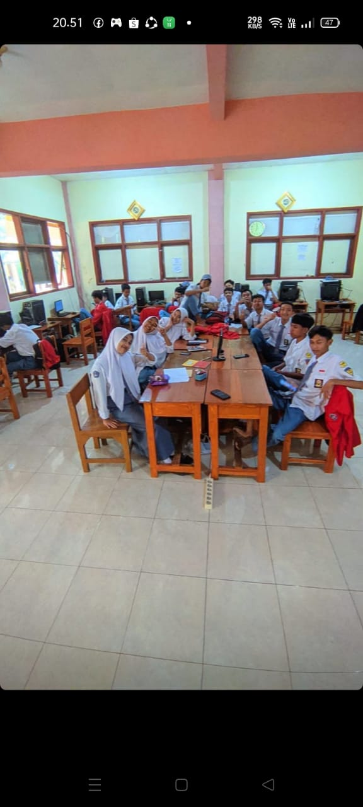

TEKNIK KOMPUTER DAN JARINGAN
Teknik komputer dan jaringan merupakan ilmu berbasis teknologi informasi dan komunikasi terkait kemampuan algoritma, dan pemrograman komputer, perakitan komputer, perakitan jaringan komputer, pengoperasian prangkat lunak dan internet.
Lulusan jurusan teknik komputer dan jaringan bisa bekerja sebagai arsitek jaringan komputer, arsitek sistem komputer, admin database, manajer sistem komputer dan informasi dan analis sistem komputer.
